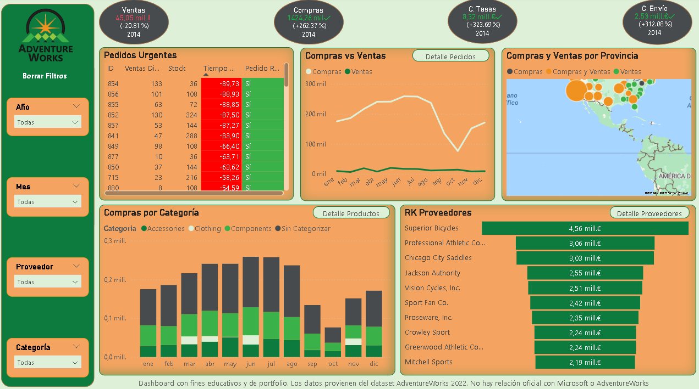
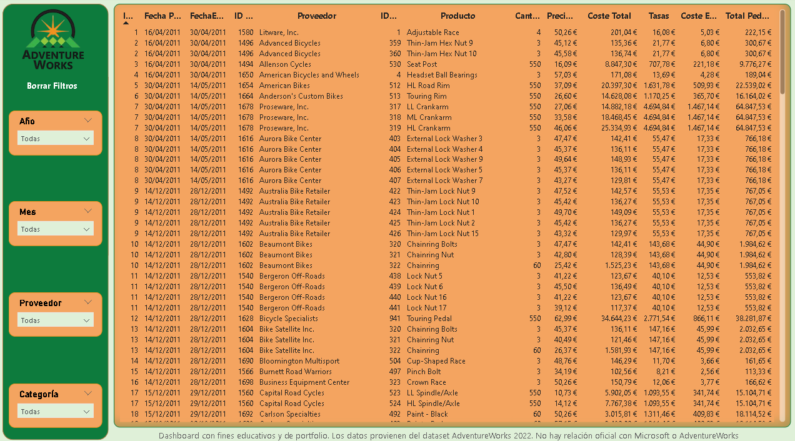
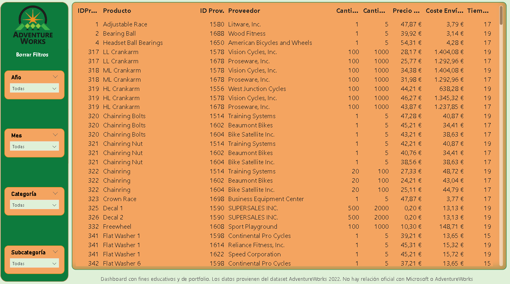
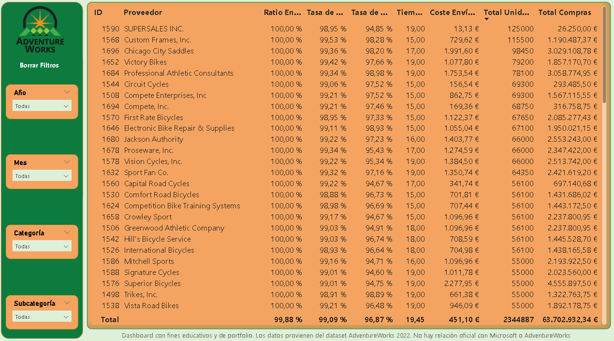

Contexto
Dataset de compras a proveedores, incluyendo información de productos, proveedores y cantidades adquiridas. Objetivo: mejorar la eficiencia en la gestión de proveedores, optimizar stock y controlar costes de manera estratégica.
Objetivos del análisis
- Identificar proveedores más importantes según volumen, fiabilidad y gasto.
- Analizar patrones de compras por categoría de producto.
- Detectar oportunidades de ahorro y optimización de stock.
- Evaluar tendencias históricas de compras para mejorar planificación.
Estructura del Dashboard
- Compras generales: KPIs: gasto total, volumen de productos, categorías más compradas. Gráficos de evolución mensual y por categoría.
- Compras por proveedor: Ranking de proveedores según volumen y costo total. Identificación de proveedores estratégicos y críticos.
- Análisis por categoría de producto: Distribución del gasto por categorías y productos con mayor gasto y frecuencia de compra.
Técnicas y herramientas
- Power BI: dashboards interactivos, segmentaciones y KPIs.
- DAX: medidas de gasto total, promedio por proveedor y porcentaje de contribución.
- Power Query: limpieza y transformación de datos.
- SQL: extracción de datos con JOINs y agregaciones.
Dataset
Fuente: AdventureWorks 2022
Principales insights
- Tres proveedores concentran más del 50% del gasto total.
- Es necesario optimizar las compras y trabajar en la eficiencia del stock.
- Identificación de oportunidades de consolidación de proveedores para optimizar costos.
- En Europa se realizan ventas y no tenemos proveedores locales.
Visualizaciones
Página 1 – Informe

Marcador 1 – Detalle Pedidos

Marcador 2 – Detalle Productos

Marcador 3 – Detalle Proveedores
